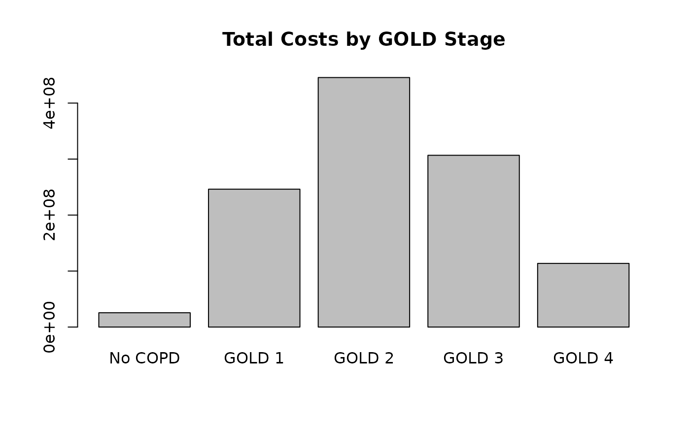

Inputs and Outputs Structure
InputsOutputsStructure.RmdUnderstanding Input Parameters
The EPIC model uses configuration files to define all input
parameters. Default input values are loaded from JSON configuration
files (e.g., config_canada.json or
config_us.json). You can retrieve these values using
get_input().
Retrieving Input Parameters
# Get default inputs for Canada (default)
library(epicR)
#> epicR: Using config files from: /home/runner/.epicR/config
#> To reset configs to defaults, use: reset_user_configs()
#>
#> Attaching package: 'epicR'
#> The following object is masked from 'package:stats':
#>
#> simulate
input <- get_input()
# Get inputs for US
input_us <- get_input(jurisdiction = "us")
# The function returns a nested list with three components:
# - values: The actual parameter values used in simulation
# - help: Descriptions of what each parameter means
# - ref: Literature references for each parameterInput Structure Overview
The input$values list contains the following main
categories:
| Category | Description |
|---|---|
global_parameters |
Time horizon, age ranges, discount rates, cohort settings |
agent |
Population demographics, mortality, height/weight distributions |
smoking |
Smoking initiation, cessation, relapse rates, mortality factors |
COPD |
COPD prevalence and incidence equations |
lung_function |
FEV1 baseline, decline, and prediction equations |
exacerbation |
Exacerbation rates, severity, duration, and mortality |
symptoms |
Cough, phlegm, dyspnea, wheeze probabilities |
outpatient |
GP visit rates |
diagnosis |
Diagnosis probabilities, case detection parameters |
medication |
Medication adherence, effectiveness, costs, utilities |
cost |
Healthcare costs (exacerbations, maintenance, visits) |
utility |
Quality of life utilities by disease stage |
manual |
Advanced calibration parameters |
Detailed Input Categories
Global Parameters (global_parameters)
Controls overall simulation settings.
| Parameter | Description | Default (Canada) |
|---|---|---|
age0 |
Starting age in the model | 40 |
time_horizon |
Model time horizon in years | 20 |
discount_cost |
Annual discount rate for costs | 0 |
discount_qaly |
Annual discount rate for QALYs | 0.03 |
closed_cohort |
0 = open population (new agents enter), 1 = closed cohort | 0 |
# Example: Modify global parameters
input <- get_input()
input$values$global_parameters$time_horizon <- 10
input$values$global_parameters$discount_cost <- 0.015
input$values$global_parameters$discount_qaly <- 0.015
results <- simulate(input = input$values)
#> === EPIC Simulation Configuration ===
#> Jurisdiction: CANADA
#> Time horizon: 10 years
#> Number of agents: 60,000
#> Event recording: DISABLED
#> =====================================
#>
#> Starting simulation...
#> No active session - initializing automatically
#> Initializing the session
#> Working directory: /home/runner/work/epicR/epicR/vignettes
#> Running EPIC model (with custom input parameters)
#> Record mode: record_mode_none (0)
#> Note: No events will be recorded. Use record_mode_event (2) or record_mode_agent (1) to record events.
#> Simulating 60000 base agents: 10% 20% 30% 40% 50%
#> 60% 70% 80% 90% 100%
#> Simulation completed in 1.5 seconds
#> Collecting results...
#> Collecting extended results...
#> Terminating the session
#> Done!Agent Demographics (agent)
Defines the simulated population characteristics.
| Parameter | Description |
|---|---|
p_female |
Proportion of females in the population (default: 0.5) |
height_0_betas |
Regression coefficients for baseline height (meters) |
height_0_sd |
Standard deviation of baseline height |
weight_0_betas |
Regression coefficients for baseline weight (kg) |
weight_0_sd |
Standard deviation of baseline weight |
height_weight_rho |
Correlation between height and weight |
p_prevalence_age |
Age distribution at baseline (111 values, ages 0-110) |
p_incidence_age |
Age distribution for new population entering model |
p_bgd_by_sex |
Life table - annual probability of background death by age and sex |
l_inc_betas |
Log-rate of new population incidence |
ln_h_bgd_betas |
Modifiers for background mortality (time trends, etc.) |
# Example: Change population sex distribution
input <- get_input()
input$values$agent$p_female <- 0.52 # 52% female
results <- simulate(input = input$values)
#> === EPIC Simulation Configuration ===
#> Jurisdiction: CANADA
#> Time horizon: 20 years
#> Number of agents: 60,000
#> Event recording: DISABLED
#> =====================================
#>
#> Starting simulation...
#> No active session - initializing automatically
#> Initializing the session
#> Working directory: /home/runner/work/epicR/epicR/vignettes
#> Running EPIC model (with custom input parameters)
#> Record mode: record_mode_none (0)
#> Note: No events will be recorded. Use record_mode_event (2) or record_mode_agent (1) to record events.
#> Simulating 60000 base agents: 10% 20% 30% 40% 50%
#> 60% 70% 80% 90% 100%
#> Simulation completed in 3.0 seconds
#> Collecting results...
#> Collecting extended results...
#> Terminating the session
#> Done!Smoking Parameters (smoking)
Controls smoking behavior and its health effects.
| Parameter | Description |
|---|---|
logit_p_current_smoker_0_betas |
Probability of being current smoker at creation |
logit_p_never_smoker_con_not_current_0_betas |
Probability of being never-smoker (given not current) |
minimum_smoking_prevalence |
Floor for smoking prevalence |
mortality_factor_current |
Mortality multipliers for current smokers by age group |
mortality_factor_former |
Mortality multipliers for former smokers by age group |
pack_years_0_betas |
Pack-years regression at baseline |
pack_years_0_sd |
Standard deviation of pack-years |
ln_h_inc_betas |
Log-hazard of smoking initiation/relapse |
ln_h_ces_betas |
Log-hazard of smoking cessation |
smoking_ces_coefficient |
Decay rate for cessation treatment effect |
smoking_cessation_adherence |
Proportion adhering to cessation treatment |
# Example: Increase smoking cessation rate
input <- get_input()
# The first coefficient is the intercept - increasing it increases cessation rate
input$values$smoking$ln_h_ces_betas[1] <- input$values$smoking$ln_h_ces_betas[1] + 0.5
results <- simulate(input = input$values)
#> === EPIC Simulation Configuration ===
#> Jurisdiction: CANADA
#> Time horizon: 20 years
#> Number of agents: 60,000
#> Event recording: DISABLED
#> =====================================
#>
#> Starting simulation...
#> No active session - initializing automatically
#> Initializing the session
#> Working directory: /home/runner/work/epicR/epicR/vignettes
#> Running EPIC model (with custom input parameters)
#> Record mode: record_mode_none (0)
#> Note: No events will be recorded. Use record_mode_event (2) or record_mode_agent (1) to record events.
#> Simulating 60000 base agents: 10% 20% 30% 40% 50%
#> 60% 70% 80% 90% 100%
#> Simulation completed in 3.0 seconds
#> Collecting results...
#> Collecting extended results...
#> Terminating the session
#> Done!COPD Parameters (COPD)
Defines COPD prevalence and incidence.
| Parameter | Description |
|---|---|
logit_p_COPD_betas_by_sex |
Logit-probability of having COPD at creation (by sex) |
ln_h_COPD_betas_by_sex |
Log-hazard of developing COPD over time (by sex) |
The beta coefficients typically include:
- Intercept
- Age effect
- Age-squared effect
- Pack-years effect
- Current smoking effect
- Calendar time effect
Lung Function Parameters (lung_function)
Controls FEV1 modeling.
| Parameter | Description |
|---|---|
fev1_0_prev_betas_by_sex |
FEV1 at creation for prevalent COPD cases |
fev1_0_prev_sd_by_sex |
SD of FEV1 at creation (prevalent) |
fev1_0_inc_betas_by_sex |
FEV1 at COPD onset for incident cases |
fev1_0_inc_sd_by_sex |
SD of FEV1 at COPD onset |
fev1_0_ZafarCMAJ_by_sex |
Coefficients for Zafari CMAJ FEV1 decline model |
pred_fev1_betas_by_sex |
Predicted FEV1 calculation coefficients |
fev1_betas_by_sex |
Mixed-effects model for FEV1 decline |
dfev1_sigmas |
Random effect variances for FEV1 decline |
dfev1_re_rho |
Correlation between random effects |
Exacerbation Parameters (exacerbation)
Controls exacerbation occurrence and outcomes.
| Parameter | Description |
|---|---|
ln_rate_betas |
Log-rate of exacerbation (10 coefficients) |
ln_rate_intercept_sd |
Random intercept SD for exacerbation rate |
logit_severity_betas |
Proportional odds model for severity (9 coefficients) |
logit_severity_intercept_sd |
Random intercept SD for severity |
rate_severity_intercept_rho |
Correlation between rate and severity random effects |
exac_end_rate |
Rate of exacerbation resolution by severity (4 values) |
logit_p_death_by_sex |
Probability of death during exacerbation |
Exacerbation severity levels:
| Level | Severity |
|---|---|
| 1 | Mild |
| 2 | Moderate |
| 3 | Severe |
| 4 | Very severe |
# Example: Reduce exacerbation rate
input <- get_input()
# Reduce the baseline rate (first coefficient is intercept)
input$values$exacerbation$ln_rate_betas[1] <- input$values$exacerbation$ln_rate_betas[1] - 0.2
results <- simulate(input = input$values)
#> === EPIC Simulation Configuration ===
#> Jurisdiction: CANADA
#> Time horizon: 20 years
#> Number of agents: 60,000
#> Event recording: DISABLED
#> =====================================
#>
#> Starting simulation...
#> No active session - initializing automatically
#> Initializing the session
#> Working directory: /home/runner/work/epicR/epicR/vignettes
#> Running EPIC model (with custom input parameters)
#> Record mode: record_mode_none (0)
#> Note: No events will be recorded. Use record_mode_event (2) or record_mode_agent (1) to record events.
#> Simulating 60000 base agents: 10% 20% 30% 40% 50%
#> 60% 70% 80% 90% 100%
#> Simulation completed in 3.0 seconds
#> Collecting results...
#> Collecting extended results...
#> Terminating the session
#> Done!Symptom Parameters (symptoms)
Controls respiratory symptoms.
| Parameter | Description |
|---|---|
logit_p_cough_COPD_by_sex |
Cough probability for COPD patients |
logit_p_cough_nonCOPD_by_sex |
Cough probability for non-COPD |
logit_p_phlegm_COPD_by_sex |
Phlegm probability for COPD patients |
logit_p_phlegm_nonCOPD_by_sex |
Phlegm probability for non-COPD |
logit_p_dyspnea_COPD_by_sex |
Dyspnea probability for COPD patients |
logit_p_dyspnea_nonCOPD_by_sex |
Dyspnea probability for non-COPD |
logit_p_wheeze_COPD_by_sex |
Wheeze probability for COPD patients |
logit_p_wheeze_nonCOPD_by_sex |
Wheeze probability for non-COPD |
covariance_COPD |
4x4 covariance matrix for symptom random effects (COPD) |
covariance_nonCOPD |
4x4 covariance matrix for symptom random effects (non-COPD) |
Outpatient Parameters (outpatient)
Controls GP visit frequency.
| Parameter | Description |
|---|---|
ln_rate_gpvisits_COPD_by_sex |
GP visit rate for COPD patients |
dispersion_gpvisits_COPD |
Dispersion parameter for COPD GP visits |
ln_rate_gpvisits_nonCOPD_by_sex |
GP visit rate for non-COPD |
dispersion_gpvisits_nonCOPD |
Dispersion parameter for non-COPD GP visits |
Diagnosis Parameters (diagnosis)
Controls COPD diagnosis and case detection.
| Parameter | Description |
|---|---|
p_case_detection |
Vector of case detection probabilities by year |
case_detection_start_end_yrs |
Years when case detection program is active |
years_btw_case_detection |
Interval between case detection opportunities |
min_cd_age |
Minimum age for case detection |
min_cd_pack_years |
Minimum pack-years for case detection eligibility |
min_cd_symptoms |
Require symptoms for case detection (0 or 1) |
case_detection_methods |
Sensitivity, specificity, cost for each method |
case_detection_methods_eversmokers |
Methods for ever-smoker population |
case_detection_methods_symptomatic |
Methods for symptomatic population |
logit_p_prevalent_diagnosis_by_sex |
Probability of diagnosis at baseline |
logit_p_diagnosis_by_sex |
Probability of diagnosis during follow-up |
p_hosp_diagnosis |
Probability of diagnosis during hospitalization |
logit_p_overdiagnosis_by_sex |
Probability of false COPD diagnosis |
p_correct_overdiagnosis |
Probability of correcting overdiagnosis |
# Example: Enable case detection program
input <- get_input()
input$values$diagnosis$case_detection_start_end_yrs <- c(0, 20) # Active years 0-20
input$values$diagnosis$p_case_detection <- rep(0.1, 20) # 10% annual probability
results <- simulate(input = input$values)
#> === EPIC Simulation Configuration ===
#> Jurisdiction: CANADA
#> Time horizon: 20 years
#> Number of agents: 60,000
#> Event recording: DISABLED
#> =====================================
#>
#> Starting simulation...
#> No active session - initializing automatically
#> Initializing the session
#> Working directory: /home/runner/work/epicR/epicR/vignettes
#> Running EPIC model (with custom input parameters)
#> Record mode: record_mode_none (0)
#> Note: No events will be recorded. Use record_mode_event (2) or record_mode_agent (1) to record events.
#> Simulating 60000 base agents: 10% 20% 30% 40% 50%
#> 60% 70% 80% 90% 100%
#> Simulation completed in 3.1 seconds
#> Collecting results...
#> Collecting extended results...
#> Terminating the session
#> Done!Medication Parameters (medication)
Controls medication use and effects.
| Parameter | Description |
|---|---|
medication_adherence |
Proportion adhering to medication (default: 0.7) |
medication_ln_hr_exac |
Log hazard ratio for exacerbation reduction by treatment |
medication_costs |
Annual costs by medication class |
medication_utility |
Utility gain by medication class |
Medication Classes:
| Class | Code | Description |
|---|---|---|
none |
0 | No medication |
SABA |
1 | Short-acting beta-agonist |
LAMA |
4 | Long-acting muscarinic antagonist |
LAMA/LABA |
6 | Long-acting muscarinic antagonist/Long-acting beta-agonist |
ICS/LAMA/LABA |
14 | Triple Therapy |
Combinations are represented as sums (e.g., ICS+LAMA+LABA = 8+4+2 = 14).
Cost Parameters (cost)
All costs are in local currency (CAD for Canada, USD for US).
| Parameter | Description |
|---|---|
bg_cost_by_stage |
Annual maintenance costs by GOLD stage (0=no COPD, 1-4=GOLD stages) |
exac_dcost |
Incremental cost per exacerbation by severity (4 values) |
cost_case_detection |
Cost of case detection procedure |
cost_outpatient_diagnosis |
Cost of outpatient diagnosis |
cost_gp_visit |
Cost per GP visit |
cost_smoking_cessation |
Cost of smoking cessation treatment |
# Example: View and modify costs
input <- get_input()
# View default exacerbation costs
print(input$values$cost$exac_dcost)
#> [,1] [,2] [,3] [,4]
#> [1,] 30.5312 764.2128 9699.226 21226.9
# Columns: mild, moderate, severe, very_severe
# Double the cost of severe exacerbations
input$values$cost$exac_dcost[3] <- input$values$cost$exac_dcost[3] * 2
results <- simulate(input = input$values)
#> === EPIC Simulation Configuration ===
#> Jurisdiction: CANADA
#> Time horizon: 20 years
#> Number of agents: 60,000
#> Event recording: DISABLED
#> =====================================
#>
#> Starting simulation...
#> No active session - initializing automatically
#> Initializing the session
#> Working directory: /home/runner/work/epicR/epicR/vignettes
#> Running EPIC model (with custom input parameters)
#> Record mode: record_mode_none (0)
#> Note: No events will be recorded. Use record_mode_event (2) or record_mode_agent (1) to record events.
#> Simulating 60000 base agents: 10% 20% 30% 40% 50%
#> 60% 70% 80% 90% 100%
#> Simulation completed in 3.1 seconds
#> Collecting results...
#> Collecting extended results...
#> Terminating the session
#> Done!Utility Parameters (utility)
Quality of life values (0-1 scale, where 1 = perfect health).
| Parameter | Description |
|---|---|
bg_util_by_stage |
Background utility by GOLD stage (5 values: no COPD + 4 stages) |
exac_dutil |
Utility decrement during exacerbation (4x4 matrix: severity x GOLD) |
# Example: View utility values
input <- get_input()
# Background utilities by stage
print(input$values$utility$bg_util_by_stage)
#> [,1] [,2] [,3] [,4] [,5]
#> [1,] 0.86 0.81 0.72 0.68 0.58
# Typical values: No COPD=0.86, GOLD1=0.81, GOLD2=0.72, GOLD3=0.68, GOLD4=0.58
# Exacerbation disutility matrix
print(input$values$utility$exac_dutil)
#> gold1 gold2 gold3 gold4
#> [1,] -0.0225 -0.0155 -0.0488 -0.0488
#> [2,] -0.0225 -0.0155 -0.0488 -0.0488
#> [3,] -0.0728 -0.0683 -0.0655 -0.0655
#> [4,] -0.0728 -0.0683 -0.0655 -0.0655Accessing Parameter Help and References
input <- get_input()
# Get help text for a parameter
input$help$exacerbation$ln_rate_betas
#> [1] "Regression coefficients for the random-effects log-hazard model of exacerbation (of any severity)"
# Returns: "Regression coefficients for the random-effects log-hazard model..."
# Get literature reference
input$ref$smoking$mortality_factor_current
#> [1] "Meta-analysis. doi:10.1001/archinternmed.2012.1397"
# Returns: "Meta-analysis. doi:10.1001/archinternmed.2012.1397"
# List all help for a category
names(input$help$cost)
#> [1] "bg_cost_by_stage" "exac_dcost"
#> [3] "cost_case_detection" "cost_outpatient_diagnosis"
#> [5] "cost_gp_visit" "cost_smoking_cessation"Running Simulations with Custom Inputs
# Complete workflow example
input <- get_input(jurisdiction = "canada")
# Modify multiple parameters
input$values$global_parameters$time_horizon <- 10
input$values$agent$p_female <- 0.52
input$values$smoking$ln_h_ces_betas[1] <- input$values$smoking$ln_h_ces_betas[1] + 0.3
# Run simulation
results <- simulate(input = input$values, n_agents = 50000)
#> === EPIC Simulation Configuration ===
#> Jurisdiction: CANADA
#> Time horizon: 10 years
#> Number of agents: 50,000
#> Event recording: DISABLED
#> =====================================
#>
#> Starting simulation...
#> No active session - initializing automatically
#> Initializing the session
#> Working directory: /home/runner/work/epicR/epicR/vignettes
#> Running EPIC model (with custom input parameters)
#> Record mode: record_mode_none (0)
#> Note: No events will be recorded. Use record_mode_event (2) or record_mode_agent (1) to record events.
#> Simulating 50000 base agents: 10% 20% 30% 40% 50%
#> 60% 70% 80% 90% 100%
#> Simulation completed in 1.2 seconds
#> Collecting results...
#> Collecting extended results...
#> Terminating the session
#> Done!
# Access results
print(results$basic)
#> $n_agents
#> [1] 63662
#>
#> $cumul_time
#> [1] 518463.6
#>
#> $n_deaths
#> [1] 8435
#>
#> $n_COPD
#> [1] 8927
#>
#> $total_exac
#> [1] 4001 21662 2194 159
#>
#> $total_exac_time
#> [1] 0.9707726 4.3371304 4.6875907 0.6070372
#>
#> $total_pack_years
#> [1] 796316.9
#>
#> $total_cost
#> [1] 71766142
#>
#> $total_qaly
#> [1] 373237.7
#>
#> $total_diagnosed_time
#> [1] 19389.34Output Structure
The simulate() function returns a list with simulation
results.
Basic Output (results$basic)
Summary statistics from the simulation.
| Output | Description |
|---|---|
n_agents |
Total number of agents simulated |
cumul_time |
Cumulative person-years of follow-up |
n_deaths |
Total number of deaths |
n_COPD |
Number of agents with COPD at end of simulation |
total_exac |
Vector of total exacerbations by severity (4 values) |
total_exac_time |
Cumulative time spent in exacerbation by severity |
total_pack_years |
Total pack-years across all agents |
total_cost |
Total discounted costs |
total_qaly |
Total discounted QALYs |
total_diagnosed_time |
Person-years with COPD diagnosis |
results <- simulate(n_agents = 50000)
#> === EPIC Simulation Configuration ===
#> Jurisdiction: CANADA
#> Time horizon: 20 years
#> Number of agents: 50,000
#> Event recording: DISABLED
#> =====================================
#>
#> Starting simulation...
#> No active session - initializing automatically
#> Initializing the session
#> Working directory: /home/runner/work/epicR/epicR/vignettes
#> Running EPIC model (with custom input parameters)
#> Record mode: record_mode_none (0)
#> Note: No events will be recorded. Use record_mode_event (2) or record_mode_agent (1) to record events.
#> Simulating 50000 base agents: 10% 20% 30% 40% 50%
#> 60% 70% 80% 90% 100%
#> Simulation completed in 2.5 seconds
#> Collecting results...
#> Collecting extended results...
#> Terminating the session
#> Done!
# Access basic results
basic <- results$basic
cat("Total agents:", basic$n_agents, "\n")
#> Total agents: 80356
cat("Total deaths:", basic$n_deaths, "\n")
#> Total deaths: 17263
cat("Mild exacerbations:", basic$total_exac[1], "\n")
#> Mild exacerbations: 8580
cat("Moderate exacerbations:", basic$total_exac[2], "\n")
#> Moderate exacerbations: 50537
cat("Severe exacerbations:", basic$total_exac[3], "\n")
#> Severe exacerbations: 4857
cat("Very severe exacerbations:", basic$total_exac[4], "\n")
#> Very severe exacerbations: 381
cat("Total cost:", basic$total_cost, "\n")
#> Total cost: 167465991
cat("Total QALYs:", basic$total_qaly, "\n")
#> Total QALYs: 688820.5Extended Output (results$extended)
Detailed breakdowns by time, age, sex, and disease stage. Extended
results are included by default. Note:
ctime = calendar time, ltime = local time
Population Counts by Time
| Output | Dimensions | Description |
|---|---|---|
n_alive_by_ctime_sex |
time_horizon x 2 | Alive agents by calendar time and sex |
n_alive_by_ctime_age |
time_horizon x 111 | Alive agents by calendar time and age |
n_alive_by_age_sex |
111 x 2 | Alive agents by age and sex (total) |
Smoking Status by Time
| Output | Dimensions | Description |
|---|---|---|
n_smoking_status_by_ctime |
time_horizon x 3 | Agents by smoking status (never/current/former) |
n_current_smoker_by_ctime_sex |
time_horizon x 2 | Current smokers by time and sex |
cumul_time_by_smoking_status |
3 | Person-years by smoking status |
COPD Outcomes by Time
| Output | Dimensions | Description |
|---|---|---|
n_COPD_by_ctime_sex |
time_horizon x 2 | COPD cases by time and sex |
n_COPD_by_ctime_age |
time_horizon x 111 | COPD cases by time and age |
n_COPD_by_ctime_severity |
time_horizon x 5 | COPD cases by time and GOLD stage (0-4) |
n_COPD_by_age_sex |
111 x 2 | COPD cases by age and sex (total) |
n_inc_COPD_by_ctime_age |
time_horizon x 111 | Incident COPD cases by time and age |
cumul_non_COPD_time |
scalar | Total person-years without COPD |
cumul_time_by_ctime_GOLD |
time_horizon x 5 | Person-years by time and GOLD stage. GOLD0 = no COPD |
Diagnosis Outcomes
| Output | Dimensions | Description |
|---|---|---|
n_Diagnosed_by_ctime_sex |
time_horizon x 2 | Diagnosed COPD cases by time and sex |
n_Diagnosed_by_ctime_severity |
time_horizon x 4 | Diagnosed cases by time and GOLD stage |
n_Overdiagnosed_by_ctime_sex |
time_horizon x 2 | False diagnoses by time and sex |
n_case_detection_by_ctime |
time_horizon x 4 | Case detection events by time and method |
n_case_detection_eligible |
scalar | Total eligible for case detection |
n_diagnosed_true_CD |
scalar | True positives from case detection |
n_agents_CD |
scalar | Agents who received case detection |
Exacerbation Outcomes
| Output | Dimensions | Description |
|---|---|---|
n_exac_by_ctime_age |
time_horizon x 111 | Exacerbations by time and age |
n_exac_by_ctime_severity |
time_horizon x 4 | Exacerbations by time and severity |
n_exac_by_ctime_sex |
time_horizon x 2 | Exacerbations by time and sex |
n_exac_by_ctime_GOLD |
time_horizon x 4 | Exacerbations by time and GOLD stage |
n_exac_by_gold_severity |
4 x 4 | Exacerbations by GOLD stage and severity |
n_exac_by_gold_severity_diagnosed |
4 x 4 | Exacerbations among diagnosed patients |
n_severep_exac_by_ctime_age |
time_horizon x 111 | Severe and very severe exacerbations by time and age |
n_exac_by_ctime_severity_undiagnosed |
time_horizon x 4 | Exacerbations in undiagnosed patients |
n_exac_by_ctime_severity_diagnosed |
time_horizon x 4 | Exacerbations in diagnosed patients |
n_exac_by_ctime_severity_female |
time_horizon x 4 | Exacerbations in females by severity |
Death Outcomes
| Output | Dimensions | Description |
|---|---|---|
n_death_by_age_sex |
111 x 2 | Deaths by age and sex |
n_exac_death_by_ctime_age |
time_horizon x 111 | Exacerbation deaths by time and age |
n_exac_death_by_ctime_severity |
time_horizon x 4 | Exacerbation deaths by severity |
n_exac_death_by_age_sex |
111 x 2 | Exacerbation deaths by age and sex |
Cost and QALY Outcomes
| Output | Dimensions | Description |
|---|---|---|
annual_cost_ctime |
time_horizon | Annual costs by calendar time |
cumul_cost_ctime |
time_horizon | Cumulative costs by calendar time |
cumul_cost_gold_ctime |
time_horizon x 5 | Cumulative costs by time and GOLD stage |
cumul_qaly_ctime |
time_horizon | Cumulative QALYs by calendar time |
cumul_qaly_gold_ctime |
time_horizon x 5 | Cumulative QALYs by time and GOLD stage |
Additional Summary Statistics
| Output | Dimensions | Description |
|---|---|---|
sum_fev1_ltime |
time_horizon | Sum of FEV1 values by local time |
sum_p_COPD_by_ctime_sex |
time_horizon x 2 | Sum of COPD probabilities by time/sex |
sum_pack_years_by_ctime_sex |
time_horizon x 2 | Sum of pack-years by time and sex |
sum_age_by_ctime_sex |
time_horizon x 2 | Sum of ages by time and sex |
sum_time_by_ctime_sex |
time_horizon x 2 | Person-time by calendar time and sex |
sum_time_by_age_sex |
111 x 2 | Person-time by age and sex |
sum_weight_by_ctime_sex |
time_horizon x 2 | Sum of weights by time and sex |
Symptom and GP Visit Outcomes
| Output | Dimensions | Description |
|---|---|---|
n_GPvisits_by_ctime_sex |
time_horizon x 2 | GP visits by time and sex |
n_GPvisits_by_ctime_severity |
time_horizon x 5 | GP visits by time and GOLD stage |
n_GPvisits_by_ctime_diagnosis |
time_horizon x 2 | GP visits by diagnosis status |
n_cough_by_ctime_severity |
time_horizon x 5 | Number with cough by time and GOLD |
n_phlegm_by_ctime_severity |
time_horizon x 5 | Number with phlegm by time and GOLD |
n_wheeze_by_ctime_severity |
time_horizon x 5 | Number with wheeze by time and GOLD |
n_dyspnea_by_ctime_severity |
time_horizon x 5 | Number with dyspnea by time and GOLD |
Medication Outcomes
| Output | Dimensions | Description |
|---|---|---|
medication_time_by_class |
5 | Person-time on each medication class |
medication_time_by_ctime_class |
time_horizon x 5 | Medication time by year and class |
n_smoking_cessation_by_ctime |
time_horizon | Smoking cessation treatments by time |
n_exac_by_medication_class |
5 x 4 | Exacerbations by medication and severity |
results <- simulate(n_agents = 50000)
#> === EPIC Simulation Configuration ===
#> Jurisdiction: CANADA
#> Time horizon: 20 years
#> Number of agents: 50,000
#> Event recording: DISABLED
#> =====================================
#>
#> Starting simulation...
#> No active session - initializing automatically
#> Initializing the session
#> Working directory: /home/runner/work/epicR/epicR/vignettes
#> Running EPIC model (with custom input parameters)
#> Record mode: record_mode_none (0)
#> Note: No events will be recorded. Use record_mode_event (2) or record_mode_agent (1) to record events.
#> Simulating 50000 base agents: 10% 20% 30% 40% 50%
#> 60% 70% 80% 90% 100%
#> Simulation completed in 2.5 seconds
#> Collecting results...
#> Collecting extended results...
#> Terminating the session
#> Done!
# Access extended results
extended <- results$extended
# Calculate COPD prevalence over time
copd_prevalence <- rowSums(extended$n_COPD_by_ctime_sex) /
rowSums(extended$n_alive_by_ctime_sex)
plot(copd_prevalence, type = "l",
xlab = "Year", ylab = "COPD Prevalence",
main = "COPD Prevalence Over Time")
# Calculate annual exacerbation rates by severity
annual_exac_rates <- extended$n_exac_by_ctime_severity /
rowSums(extended$n_COPD_by_ctime_sex)
# Analyze costs by GOLD stage
costs_by_gold <- colSums(extended$cumul_cost_gold_ctime)
names(costs_by_gold) <- c("No COPD", "GOLD 1", "GOLD 2", "GOLD 3", "GOLD 4")
barplot(costs_by_gold, main = "Total Costs by GOLD Stage")
Event History (results$events)
For detailed agent-level analysis, you can capture the complete event
history by setting return_events = TRUE.
Note: Event recording requires significant memory. Use with caution for large simulations.
# Run simulation with event recording
results <- simulate(
n_agents = 10000,
return_events = TRUE
)
#> === EPIC Simulation Configuration ===
#> Jurisdiction: CANADA
#> Time horizon: 20 years
#> Number of agents: 10,000
#> Event recording: ENABLED (record_mode = 2)
#> Estimated memory for events: 236.6 MB
#> =====================================
#>
#> Starting simulation...
#> No active session - initializing automatically
#> Initializing the session
#> Working directory: /home/runner/work/epicR/epicR/vignettes
#> Running EPIC model (with custom input parameters)
#> Record mode: record_mode_event (2)
#> Simulating 10000 base agents: 10% 20% 30% 40% 50%
#> 60% 70% 80% 90% 100%
#> Simulation completed in 0.6 seconds
#> Collecting results...
#> Collecting extended results...
#> Collecting event history...
#> Terminating the session
#> Done!
# Access events data frame
events <- results$events
head(events)
#> id local_time female time_at_creation age_at_creation pack_years gold event
#> 1 0 0.000000 1 0 59.76663 26.11976 0 0
#> 2 0 1.000000 1 0 59.76663 27.11976 0 1
#> 3 0 2.000000 1 0 59.76663 28.11976 0 1
#> 4 0 2.106222 1 0 59.76663 28.22598 0 3
#> 5 0 3.000000 1 0 59.76663 28.22598 0 1
#> 6 0 4.000000 1 0 59.76663 28.22598 0 1
#> FEV1 FEV1_slope FEV1_acceleration pred_FEV1 smoking_status localtime_at_COPD
#> 1 0 0 0 0 1 0
#> 2 0 0 0 0 1 0
#> 3 0 0 0 0 1 0
#> 4 0 0 0 0 0 0
#> 5 0 0 0 0 0 0
#> 6 0 0 0 0 0 0
#> age_at_COPD weight_at_COPD height followup_after_COPD FEV1_baseline
#> 1 0 0 1.661169 0 3.277484
#> 2 0 0 1.661169 0 3.277484
#> 3 0 0 1.661169 0 3.277484
#> 4 0 0 1.661169 0 3.277484
#> 5 0 0 1.661169 0 3.277484
#> 6 0 0 1.661169 0 3.277484
#> exac_status cough phlegm wheeze dyspnea gpvisits diagnosis medication_status
#> 1 0 0 0 0 0 0 0 0
#> 2 0 1 0 0 1 4 0 0
#> 3 0 0 0 1 0 3 0 0
#> 4 0 0 0 1 0 3 0 0
#> 5 0 0 0 0 0 1 0 0
#> 6 0 0 0 0 0 4 0 0
#> case_detection cumul_cost cumul_qaly time_at_diagnosis
#> 1 0 0 0.0000000 0
#> 2 0 0 0.8349515 0
#> 3 0 0 1.6455839 0
#> 4 0 0 1.6455839 0
#> 5 0 0 2.4326058 0
#> 6 0 0 3.1967046 0
#> exac_history_n_moderate exac_history_n_severe_plus
#> 1 0 0
#> 2 0 0
#> 3 0 0
#> 4 0 0
#> 5 0 0
#> 6 0 0Event Matrix Columns (33 columns)
| Column | Description |
|---|---|
id |
Unique agent identifier |
local_time |
Time since agent creation (years) |
female |
Sex (0=male, 1=female) |
time_at_creation |
Calendar time when agent entered model |
age_at_creation |
Age when agent entered model |
pack_years |
Cumulative pack-years of smoking |
gold |
GOLD stage (0=no COPD, 1-4=GOLD stages) |
event |
Event type code (see table below) |
FEV1 |
Current FEV1 value (liters) |
FEV1_slope |
FEV1 decline slope |
FEV1_acceleration |
FEV1 decline acceleration |
pred_FEV1 |
Predicted FEV1 based on age/height/sex |
smoking_status |
Current smoking status (0=not smoking, 1=smoking) |
localtime_at_COPD |
Local time when COPD developed |
age_at_COPD |
Age when COPD developed |
weight_at_COPD |
Weight when COPD developed |
height |
Height (meters) |
followup_after_COPD |
Time since COPD onset |
FEV1_baseline |
FEV1 at COPD onset |
exac_status |
Current exacerbation status (0=none, 1-4=severity) |
cough |
Cough symptom present (0/1) |
phlegm |
Phlegm symptom present (0/1) |
wheeze |
Wheeze symptom present (0/1) |
dyspnea |
Dyspnea symptom present (0/1) |
gpvisits |
Annual number of GP visits |
diagnosis |
Diagnosis status (0=undiagnosed, 1=diagnosed) |
medication_status |
Medication class bitfield |
case_detection |
Case detection received (0/1) |
cumul_cost |
Cumulative cost for this agent |
cumul_qaly |
Cumulative QALYs for this agent |
time_at_diagnosis |
Local time when diagnosed |
exac_history_n_moderate |
Cumulative count of moderate exacerbations |
exac_history_n_severe_plus |
Cumulative count of severe and very severe exacerbations |
Event Type Codes
| Event | Code | Description |
|---|---|---|
| Start | 0 | Agent creation |
| Annual | 1 | Annual update (fixed time event) |
| Birthday | 2 | Birthday event (currently disabled) |
| Smoking change | 3 | Smoking status change (start or quit) |
| COPD incidence | 4 | New COPD diagnosis |
| Exacerbation | 5 | Exacerbation onset |
| Exacerbation end | 6 | Exacerbation resolution |
| Death by exacerbation | 7 | Death during exacerbation |
| Doctor visit | 8 | Doctor visit (not implemented) |
| Medication change | 9 | Medication change (not implemented) |
| Background death | 13 | Death from background causes |
| End | 14 | End of follow-up |
# Analyze events for a specific agent
results <- simulate(n_agents = 10000, return_events = TRUE)
#> === EPIC Simulation Configuration ===
#> Jurisdiction: CANADA
#> Time horizon: 20 years
#> Number of agents: 10,000
#> Event recording: ENABLED (record_mode = 2)
#> Estimated memory for events: 236.6 MB
#> =====================================
#>
#> Starting simulation...
#> No active session - initializing automatically
#> Initializing the session
#> Working directory: /home/runner/work/epicR/epicR/vignettes
#> Running EPIC model (with custom input parameters)
#> Record mode: record_mode_event (2)
#> Simulating 10000 base agents: 10% 20% 30% 40% 50%
#> 60% 70% 80% 90% 100%
#> Simulation completed in 0.5 seconds
#> Collecting results...
#> Collecting extended results...
#> Collecting event history...
#> Terminating the session
#> Done!
events <- results$events
# Get all events for agent #5
agent_5_events <- events[events$id == 5, ]
print(agent_5_events[, c("local_time", "event", "gold", "exac_status")])
#> local_time event gold exac_status
#> 127 0 0 0 0
#> 128 1 1 0 0
#> 129 2 1 0 0
#> 130 3 1 0 0
#> 131 4 1 0 0
#> 132 5 1 0 0
#> 133 6 1 0 0
#> 134 7 1 0 0
#> 135 8 1 0 0
#> 136 9 1 0 0
#> 137 10 1 0 0
#> 138 11 1 0 0
#> 139 12 1 0 0
#> 140 13 1 0 0
#> 141 14 1 0 0
#> 142 15 1 0 0
#> 143 16 1 0 0
#> 144 17 1 0 0
#> 145 18 1 0 0
#> 146 19 1 0 0
#> 147 20 14 0 0
# Count events by type
event_counts <- table(events$event)
names(event_counts) <- c("Start", "Annual", "Birthday", "Smoking",
"COPD", "Exac", "Exac_end", "Exac_death",
"Doctor", "Med_change", "", "", "",
"Bgd_death", "End")[as.numeric(names(event_counts)) + 1]
print(event_counts)
#> Start Annual Smoking COPD Exac Exac_end Exac_death
#> 16071 210012 2920 1012 13745 13539 188
#> Bgd_death End
#> 3311 16071
# Find all exacerbation events
exac_events <- events[events$event == 5, ]
cat("Total exacerbations:", nrow(exac_events), "\n")
#> Total exacerbations: 13745
cat("By severity:\n")
#> By severity:
print(table(exac_events$exac_status))
#>
#> 1 2 3 4
#> 1817 10844 1009 75Record Modes
The record_mode setting controls what level of detail is
captured.
| Mode | Value | Description | Memory Usage |
|---|---|---|---|
record_mode_none |
0 | Aggregate output only | Minimal |
record_mode_agent |
1 | Agent-level summaries | Low |
record_mode_event |
2 | Complete event history | High |
record_mode_some_event |
3 | Selected event types only | Medium |
# Using settings directly
settings <- get_default_settings()
settings$record_mode <- 2 # Full event recording
settings$n_base_agents <- 10000
results <- simulate(settings = settings, return_events = TRUE)
#> === EPIC Simulation Configuration ===
#> Jurisdiction: CANADA
#> Time horizon: 20 years
#> Number of agents: 10,000
#> Event recording: ENABLED (record_mode = 2)
#> Estimated memory for events: 236.6 MB
#> =====================================
#>
#> Starting simulation...
#> No active session - initializing automatically
#> Initializing the session
#> Working directory: /home/runner/work/epicR/epicR/vignettes
#> Running EPIC model (with custom input parameters)
#> Record mode: record_mode_event (2)
#> Simulating 10000 base agents: 10% 20% 30% 40% 50%
#> 60% 70% 80% 90% 100%
#> Simulation completed in 0.5 seconds
#> Collecting results...
#> Collecting extended results...
#> Collecting event history...
#> Terminating the session
#> Done!
# Or simply use return_events = TRUE (automatically sets record_mode = 2)
results <- simulate(n_agents = 10000, return_events = TRUE)
#> === EPIC Simulation Configuration ===
#> Jurisdiction: CANADA
#> Time horizon: 20 years
#> Number of agents: 10,000
#> Event recording: ENABLED (record_mode = 2)
#> Estimated memory for events: 236.6 MB
#> =====================================
#>
#> Starting simulation...
#> No active session - initializing automatically
#> Initializing the session
#> Working directory: /home/runner/work/epicR/epicR/vignettes
#> Running EPIC model (with custom input parameters)
#> Record mode: record_mode_event (2)
#> Simulating 10000 base agents: 10% 20% 30% 40% 50%
#> 60% 70% 80% 90% 100%
#> Simulation completed in 0.6 seconds
#> Collecting results...
#> Collecting extended results...
#> Collecting event history...
#> Terminating the session
#> Done!Complete Example: Cost-Effectiveness Analysis
# Baseline scenario
input_baseline <- get_input(jurisdiction = "canada")
results_baseline <- simulate(
input = input_baseline$values,
n_agents = 50000,
seed = 12345 # For reproducibility
)
#> Random seed set to: 12345
#> === EPIC Simulation Configuration ===
#> Jurisdiction: CANADA
#> Time horizon: 20 years
#> Number of agents: 50,000
#> Event recording: DISABLED
#> =====================================
#>
#> Starting simulation...
#> No active session - initializing automatically
#> Initializing the session
#> Working directory: /home/runner/work/epicR/epicR/vignettes
#> Running EPIC model (with custom input parameters)
#> Record mode: record_mode_none (0)
#> Note: No events will be recorded. Use record_mode_event (2) or record_mode_agent (1) to record events.
#> Simulating 50000 base agents: 10% 20% 30% 40% 50%
#> 60% 70% 80% 90% 100%
#> Simulation completed in 2.5 seconds
#> Collecting results...
#> Collecting extended results...
#> Terminating the session
#> Done!
# Intervention scenario: Enhanced smoking cessation
input_intervention <- get_input(jurisdiction = "canada")
input_intervention$values$smoking$ln_h_ces_betas[1] <-
input_intervention$values$smoking$ln_h_ces_betas[1] + 0.5
results_intervention <- simulate(
input = input_intervention$values,
n_agents = 50000,
seed = 12345 # Same seed for comparability
)
#> Random seed set to: 12345
#> === EPIC Simulation Configuration ===
#> Jurisdiction: CANADA
#> Time horizon: 20 years
#> Number of agents: 50,000
#> Event recording: DISABLED
#> =====================================
#>
#> Starting simulation...
#> No active session - initializing automatically
#> Initializing the session
#> Working directory: /home/runner/work/epicR/epicR/vignettes
#> Running EPIC model (with custom input parameters)
#> Record mode: record_mode_none (0)
#> Note: No events will be recorded. Use record_mode_event (2) or record_mode_agent (1) to record events.
#> Simulating 50000 base agents: 10% 20% 30% 40% 50%
#> 60% 70% 80% 90% 100%
#> Simulation completed in 2.4 seconds
#> Collecting results...
#> Collecting extended results...
#> Terminating the session
#> Done!
# Calculate incremental cost-effectiveness
delta_cost <- results_intervention$basic$total_cost - results_baseline$basic$total_cost
delta_qaly <- results_intervention$basic$total_qaly - results_baseline$basic$total_qaly
icer <- delta_cost / delta_qaly
cat("Baseline total cost:", results_baseline$basic$total_cost, "\n")
#> Baseline total cost: 169165520
cat("Intervention total cost:", results_intervention$basic$total_cost, "\n")
#> Intervention total cost: 171719698
cat("Baseline total QALYs:", results_baseline$basic$total_qaly, "\n")
#> Baseline total QALYs: 688131.6
cat("Intervention total QALYs:", results_intervention$basic$total_qaly, "\n")
#> Intervention total QALYs: 688511.2
cat("Incremental cost:", delta_cost, "\n")
#> Incremental cost: 2554179
cat("Incremental QALYs:", delta_qaly, "\n")
#> Incremental QALYs: 379.5853
cat("ICER:", icer, "per QALY\n")
#> ICER: 6728.866 per QALYImportant Notes
- Starting Age: EPIC only simulates patients starting at age 40
- Comorbidities: Cardiovascular comorbidities (MI, stroke, heart failure) are not implemented in the current version
- Memory: Event recording can require substantial memory for large simulations
-
Reproducibility: Use the
seedparameter for reproducible results -
Discounting: Costs and QALYs are discounted at the
rates specified in
global_parameters